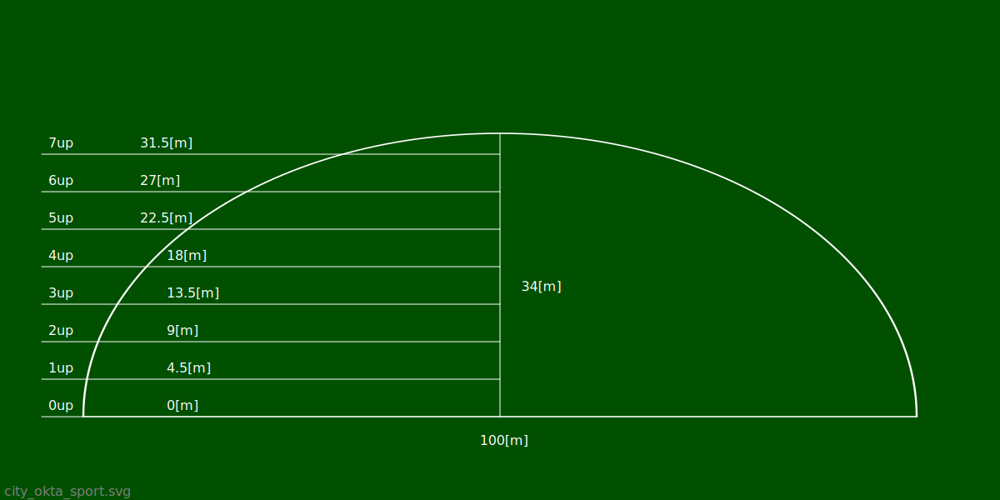
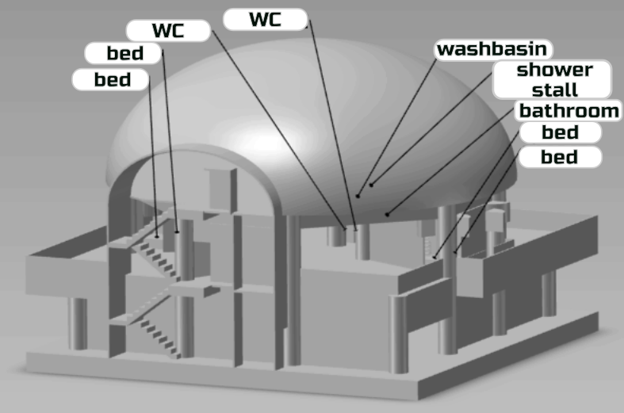

Okta - a city that looks like a regular octagon.

1 - industrial warehouses, car service.
2 - production and disposal.
3 - living squares.
The one-way octagonal road that surrounds the city shown in the diagram above is 17 [m] wide. From every pinnacle octagon, a one-way road is directed to the center, 4 [m] = 2 * 2 [m] in width. The arrows indicate what is allowed. direction of movement of cars. After entering the octagonal road, the car must pass at least one side of the octagon, before exiting the octagonal road.
The city contains 3200 = 40 * 20 * 4 living squares. Residential house designed for 5 residents. The city accommodates 16000 = 3200 * 5 inhabitants. City area 25.456[km2]=2*20.5*9[km2]. Population density of the city 628[inhabitants/km2]=16000/25.456 inhabitants per square kilometer.
The permitted speed of movement within the city is from 0 to 6 [m / s]. For the movement of cars on the internal roads of the city, all parallel internal roads of one direction are simultaneously opened, then all parallel internal roads of the other direction are opened, for movement in turn, with an interval of 180 [s]. Circumferential one-way roads are always open to traffic.
City center.

1 - arsenal. (weapon + practice/research) Storing and modifying tools created for malicious changes. Collecting and providing information useful to the observer about group physical harmful changes.
2 - hotel. Temporary modest residence. Heating, sewerage, electricity, acceptable soundproofing.
3 - children. Temporary place of possible safe group placement and learning of children, in comfortable conditions.
4 - courts. Open areas for practicing various types of sports games.
5 - music. Storage, demonstration and modification of instruments created to modify sounds.
6 - entertainment. 6A - aquariums, museums, exhibitions. 6B - theaters, concerts. 6C - cinemas. 6D - dancing, billiards, gambling, brothels. Safe rooms of buy and using, only in the form of inhaled smoke, inhaled vapor, drinkable liquid, inhaled powder, chemically active substances, under the supervision of a siter.
7 - спорт. Sports complex. Comfortable serviced areas generally for summer sports.
8 - rescuers. Medicine. Fighting fires. Rescue work. Repair and maintenance of the city.
9 - technologies. Collection, storage and demonstration of tools for creation and modification. Collecting and providing information useful for the observer about the ways of creating and changing.
10 - shopping center. Sale of things, services, food.
11 - football. Outdoor football etc stadium.
12 - repository. Storage and maintenance of the city's valuable resources.
13 - center of regulation. Regulation and planning of changes in the city. Chronicle. Crematorium. Electric chair.
(N, W, S, E) Fair. Handmade to order. Free sale of things, services, food, traditional for the culture of the peoples represented.
Enough reasonable animals are allowed in the city square(f.e. guide-dog).
Birds are allowed in the city square, except for scavengers and ravens .
On the city square are prohibited: Scavengers, poisonous animals, animals infected with dangerous infections, animals weighing more than 10 kg, aggressive animals ( lynx, manul, crocodile, anaconda, etc ) canids, ravens, ungulates, rodents.
Animals are allowed in the fairground and living quarters, provided they are kept safe.
The living squares, in the area of which there are animals, is fenced with a fence with a height of 3 [m] to 7 [m] inclusive. The fence around the living square is transparent starting from a height of 3 [m] and higher. The transparent part of the fence is colorless. The height of the fence must be sufficient to keep the animals in the area of the square of residence. Animals are transported in special sufficiently strong insulated wheeled carts. Animals weighing more than 10 [kg] are transported in special sufficiently strong insulated vehicles. It is forbidden to transport animals in conditions where there is a possibility of contact of a stranger passing through, even if the passing person provokes contact with the transported animal.
Let's be honest, no one needs dog's shit on their boot, or watch dog shit if he doesn't ask for it. Not pets, rats, pigeons, flies and others, do their job well. There is no need to help them damage the infrastructure and create emergency situations in which others may suffer. If you want a meat toy, keep it inside your house, or do it outside the city, in the countryside, where cows, sheep, more freedom for adventure lovers.
living squares.

Sports complex.

Front view.
0up - zero floor surface. Height 0[m].
1up - first floor surface. Height 4.5[m].
2up - second floor surface. Height 9[m].
3up - third floor surface. Height 13.5[m].
4up - fourth floor surface. Height 18[m].
5up - fifth floor surface. Height 22.5[m].
6up - sixth floor surface. Height 27[m].
7up - seventh floor surface. Height 31.5[m].
The roof repeats an ellipse with semi-axes 50[m] and 34[m].
Floor plans. In the area of the room, the horizontal length is indicated first. When calculating the area of passes, when the horizontal and vertical directions coincide, the coincidence area goes over to the horizontal direction. The calculation of the area of the passages is carried out from bottom to top.
Floor 0up.
1-elevator. Area 35.75[m2]=6.5[m]*5.5[m]. Main elevator area 7[m2]=3.5[m]*2[m] intended for general use. An additional lift is designed for difficult situations. Additional elevator area 7[m2]=3.5[m]*2[m] used by healthcare workers for work purposes.
There is a public staircase between the elevators. Stair width 1.5[m]. Ladder step length 1/3 [m]. Stair tread height 1/4[m].
2-volleyball. Area 600 [m2] = 30 [m] * 20 [m] accommodates a standard playing field with a reserve of area around the playing field.
3-reception. Area 19.25 [m2] = 3.5 [m] * 5.5 [m]. Distribution of changing rooms between visitors. Voice notification of visitors and staff through the speakerphone.
4-staff (f). Area 62.5 [m2] = 5 [m] * 12.5 [m]. Recreation room for female auxiliary workers.
5-staff (m). Area 62.5 [m2] = 5 [m] * 12.5 [m]. Recreation room for male auxiliary workers.
6-checkpoint. Area 12.5 [m2] = 5 [m] * 2.5 [m]. Registration for a visit. Issuance of passes. Background information.
7-basketball. Area 700 [m2] = 35 [m] * 20 [m] fits a standard playing field with a reserve of area around playing field.
8-food. Area 400 [m2] = 20 [m] * 20 [m]. Public catering area for visitors. Completely separated - entrance from the street. Built up in several floors with a height of 2.5 meters from floor to ceiling per floor, on a separate project. Uses common or separate water supply, ventilation, electricity for the complex.
9-electricity. Area 75 [m2] = 5 [m] * 15 [m]. Office space with limited employee access. Placement of systems sufficient for a full-fledged power supply of the complex.
10-climate. Area 225 [m2] = 15 [m] * 15 [m]. Office space with limited employee access. Placement of systems sufficient for full air exchange, maintaining the level of air humidity and temperature air complex.
11-water. Area 300 [m2] = 20 [m] * 15 [m]. Office space with limited employee access. Placement of systems sufficient for adequate water supply to the complex.
12 changing rooms. Each dressing room accommodates 13 visitors. The dressing room is equipped with amenities and contains 1 large cabinet 1 [m] * 1 [m], 13 cabinets 0.5 [m] * 1 [m], 13 seats 0.5 [m] * 0.5 [m], 1 washbasin, 1 push, 4 showers.
13-swimming pool. Area 3600 [m2] = 60 [m] * 60 [m]. The swimming area is divided into two parts. First part - swimming area of constant depth. The area of the first part is 1250 [m2] = 25 [m] * 50 [m]. The second part of - diving area and swimming area of stepped changing depth. The area of the second part 750 [m2] = 15 [m] * 50 [m].
14-hockey. Area 1650 [m2] = 30 [m] * 55 [m] accommodates a standard playing field.
Dressing room area 0up 825 [m2] = 22 * 2.5 [m] * 15 [m].
Passage area 0up 1457.5 [m2] = 5 [m] * 2.5 [m] + 5 [m] * 20 [m] + 10 [m] * 2 [m ] + 60 [m] * 5 [m] + 5 [m] * 15 [m] + 5 [m] * 40 [m] + 5 [m] * 55 [m] + 5 [m] * 55 [m] + 5 [m] * 40 [m].
Floor 1up.

0up-continuation of the ground floor.
15-utility room. Area 30 [m2] = 2 [m] * 15 [m].
16-gymnastics for pregnant women. Area 175 [m2] = 15 [m] * 7.5 [m] + 5 [m] * 12.5 [m].
17-medicine. Area 89.25 [m2] = 10 [m] * 7 [m] +3.5 [m] * 5.5 [m].
18-hockey. Area 1650 [m2] = 30 [m] * 55 [m] accommodates a standard playing field.
K-roof (area of increasing height).
Dressing room area 1up 787.5 [m2] = 21 * 2.5 [m] * 15 [m].
Passage area 1up 1262.5 [m2] = 59.5 [m] * 5 [m] + 5 [m] * 15 [m] + 39.5 [m] * 5 [m] + 4.5 [m] * 55 [m] + 4.5 [m] * 55 [m] + 39.5 [m] * 5 [m].
Floor 2up.
19-utility room. Area 45 [m2] = 3 [m] 15 * [m].
20-utility room. Area 50 [m2] = 2.5 [m] * 20 [m].
21-stretch (f). Area 105 [m2] = 10.5 [m] * 10 [m].
22-yoga (f). Area 105 [m2] = 10.5 [m] * 10 [m].
23-fitness (f). Area 100 [m2] = 10 [m] * 10 [m].
24-aerobics (f). Area 100 [m2] = 10 [m] * 10 [m].
25-table tennis. Area 258 [m2] = 12.5 [m] * 2.5 [m] + 15 [m] * 12 [m] + 8.5 [m] * 5.5 [m].
26-basketball. Area 700 [m2] = 35 [m] * 20 [m] fits a standard playing field with a reserve of area around playing field.
27-spring hall. Area 300 [m2] = 20 [m] * 15 [m]. Exercise machines based on stretching springs. The injury rate of spring trainers is less than the injury rate of trainers with constant resistance from force weight.
28-body weight. Area 262.5 [m2] = 17.5 [m] * 15 [m]. Supports for training the body with its own weight visitor.
29-utility room. Area 37.5 [m2] = 2.5 [m] * 15 [m].
30-badminton. Area 450 [m2] = 4 * 7.5 [m] * 15 [m] accommodates four standard playing fields with a margin area around the playing field.
31-minifootball. Area 1100 [m2] = 25 [m] * 44 [m] accommodates a standard large playing field with a margin area around the playing field.
32-utility room. Area 162.5 [m2] = 2.5 [m] * 65 [m].
Dressing room area 2up 750 [m2] = 20 * 2.5 [m] * 15 [m].
Passage area 2up 1060 [m2] = 45.5 [m] * 5 [m] + 5 [m] * 15 [m] + 35.5 [m] * 2 [m] + 3 [m] * 15 [m] + 2.5 [m] * 15 [m] + 35.5 [m] * 2 [m] + 5.5 [m] * 44 [m] + 5 [m] * 44 [m] + 35.5 [m] * 2 [m].
Floor 3up.
30-utility room. Area 45 [m2] = 3 [m] * 15 [m].
31-utility room. Area 70 [m2] = 3.5 [m] * 20 [m].
32-pears. Area 70 [m2] = 7 [m] * 10 [m]. Room with pears for practicing blows.
33-mannequins. Area 70 [m2] = 7 [m] * 10 [m]. Mannequin room for practicing harm techniques to the enemy. Ring 34. Area 100 [m2] = 10 [m] * 10 [m] accommodates a standard boxing ring 6 [m] * 6 [m], with a margin of space around the ring.
35-ring. Area 100 [m2] = 10 [m] * 10 [m] accommodates a standard boxing ring 6 [m] * 6 [m], with a margin of space around the ring.
36-medicine. Area 195.25 [m2] = 3 * 5 [m] * 6 [m] + 15 [m] * 8.5 [m] + 8.5 [m] * 5.5 [m]. Premises for medical purposes. Additional washbasins. Recreation room for medical personnel. Four beds. Two operating rooms for bleeding wounds and first aid for complex injuries.
37-single combats. Area 300 [m2] = 20 [m] * 15 [m].
38-single combats. Area 180 [m2] = 12 [m] * 15 [m].
39-utility room. Area 52.5 [m2] = 3.5 [m] * 15 [m].
Dressing room area 3up 712.5 [m2] = 19 * 2.5 [m] * 15 [m].
Passage area 3up 352.5 [m2] = 55.5 [m] * 5 [m] + 5 [m] * 15 [m].
Floor 4up.
40-utility room. Area 325 [m2] = 5 [m] * 65 [m].
41-large tennis. Area 1216 [m2] = 2 * 19 [m] * 32 [m] accommodates 2 standard playing fields with a reserve of area around the playing field.
42-urban. Area 3120 [m2] = 52 [m] * 60 [m]. Modifiable buildings for urban sports. BMX, rollerdrome, skateboard, parkour, climbing wall.
43-utility room. Area 67.5 [m2] = 4.5 [m] * 15 [m].
44-utility room. Area 25 [m2] = 5 [m] * 5 [m].
45-utility room. Area 25 [m2] = 5 [m] * 5 [m].
46-utility room. Area 25 [m2] = 5 [m] * 5 [m].
47-utility room. Area 25 [m2] = 5 [m] * 5 [m].
48-pole. Area 60 [m2] = 12 [m] * 5 [m]. A comfortable and safe room equipped with professional striptease poles.
49-pole. Area 60 [m2] = 12 [m] * 5 [m].
50-pole. Area 60 [m2] = 12 [m] * 5 [m].
51-pole. Area 60 [m2] = 12 [m] * 5 [m].
52-medicine. Area 195.25 [m2] = 3 * 5 [m] * 6 [m] + 15 [m] * 8.5 [m] + 8.5 [m] * 5.5 [m].
53-volleyball. Area 700 [m2] = 35 [m] * 20 [m] fits a standard playing field with a reserve of area around playing field.
54-single combats. Area 300 [m2] = 20 [m] * 15 [m].
55-mannequins. Area 105 [m2] = 7 [m] * 15 [m].
56-utility room. Area 75 [m2] = 5 [m] * 15 [m].
Dressing room area 4up 637.5 [m2] = 17 * 2.5 [m] * 15 [m].
Passage area 4up 974 [m2] = 5 [m] * 20 [m] + 52 [m] * 5 [m] + 5 [m] * 15 [m] + 2 * 4 [m] * 32 [m] + 27 [m] * 1 [m] + 2 * 4 [m] * 32 [m].
Floor 5up.

57-utility room. Area 280 [m2] = 7 [m] * 40 [m].
58-pole. Area 50 [m2] = 10 [m] * 5 [m].
59-pole. Area 50 [m2] = 10 [m] * 5 [m].
60-pole. Area 50 [m2] = 10 [m] * 5 [m].
61-pole. Area 50 [m2] = 10 [m] * 5 [m]. No. 62-medicine. Area 195.25 [m2] = 3 * 5 [m] * 6 [m] + 15 [m] * 8.5 [m] + 8.5 [m] * 5.5 [m].
63-dances. Area 300 [m2] = 20 [m] * 15 [m].
64-utility room. Area 105 [m2] = 7 [m] * 15 [m].
Dressing room area 5up 525 [m2] = 14 * 2.5 [m] * 15 [m].
Passage area 5up 275 [m2] = 40 [m] * 5 [m] + 5 [m] * 15 [m].
Floor 6up.

65-utility room. Area 400 [m2] = 10 [m] * 40 [m].
66-medicine. Area 195.25 [m2] = 3 * 5 [m] * 6 [m] + 15 [m] * 8.5 [m] + 8.5 [m] * 5.5 [m].
67-table tennis. Area 490 [m2] = 24.5 [m] * 20 [m].
68-utility room. Area 210 [m2] = 10.5 [m] * 20 [m].
69-spring hall. Area 142.5 [m2] = 9.5 [m] * 15 [m].
70-utility room. Area 157.5 [m2] = 10.5 [m] * 15 [m].
71-shooting gallery. Area 617.5 [m2] = 9.5 [m] * 65 [m].
72-utility room. Area 682.5 [m2] = 10.5 [m] * 65 [m].
Dressing room area 6up 375 [m2] = 10 * 2.5 [m] * 15 [m].
Passage area 6up 225 [m2] = 30 [m] * 5 [m] + 5 [m] * 15 [m].
The area of the premises of the sports complex is 34992.75 [m2].
The area of the main premises of the sports complex 20090.75 [m2].
Dressing rooms area of the sports complex 4612.5 [m2].
Area of auxiliary premises of the sports complex 10289.5 [m2] = 34992.75 [m2] -20090.75 [m2] -4612.5 [m2 ].
Residential house. Designed for five people - two adults and three teenagers. Square footing side 22 [m]. Ceiling height 3 [m]. Floor height 4 [m].  download 3D model . Can be opened using FreeCAD
Translated and prepared for Mr. Musk in 2021. There is tiny chance it will have benefit. The idea and translation created by me (healingdrawing). Translation checked by google translater less or more.